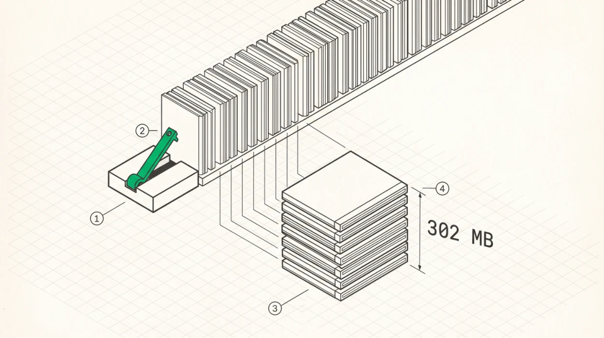

Mixture-of-Experts Inference
MoE architecture
MoE replaces the dense FFN with many parallel FFNs, the experts, plus a router that picks a few per token.
x → router (GEMV) → top-k selection → normalised weights→ for each selected expert e: down_e(SiLU(gate_e(x)) ⊙ up_e(x))→ weighted sum → out
Qwen3-235B-A22B has 128 experts with top-8 routing, expert intermediate size 1,536, hidden 4,096, and 94 layers, giving 235B total parameters with 22B active per token. DeepSeek-V3 has 256 routed experts plus a shared expert, top-8, 671B total and 37B active.
The shared expert pattern, which DeepSeek and others use, is worth noting. One expert every token uses, plus k routed ones, capturing common computation without routing overhead. For an inference engine that’s simply a dense FFN alongside the sparse ones, and it changes the weight-traffic arithmetic below in a way that matters.
The router
The gate projection computes one score per expert, and for 128 experts with hidden 4,096 that’s a 512Kparameter GEMV, which is trivial. Then top-k selection, then normalisation, where Qwen3’s
norm_topk_prob = true means the top-k weights get renormalised to sum to 1. Whether the softmax is taken before or after selection differs between architectures and changes the result, so read the config.
The router is cheap in FLOPs and expensive in structure, because everything after it is data-dependent. The selection must be resolved on-device, since reading expert indices back to the host to decide what to dispatch adds a full round-trip per layer, and at 94 layers that’s the entire latency budget.
Decode MoE is weight-bandwidth bound
Get this arithmetic right, because it’s the whole chapter. For Qwen3-235B, each expert has three matrices, gate, up, and down, each 4,096 × 1,536.
3 × 4096 × 1536 = 18.87M parameters× 2 bytes (FP16) = 37.7 MB per expert
Top-8 selection at batch 1 therefore reads
8 × 37.7 MB = 302 MB per layer per tokenFigures around 25 MB per expert and 200 MB per layer circulate for this model and are too low. The correct ones are above, and they’re confirmed by measurement, since mainarch’s MoE FFN kernel at these exact dimensions moves that volume at 872 GB/s in 346 µs , which works out at 302 MB.
At a 5,800 GB/s sustained ceiling, 302 MB has a floor of about 52 µs, and the measured 346 µs sits well above it for an instructive reason. The eight experts’ weights live at eight unrelated VRAM addresses, so the access pattern is eight independent streams rather than one, and each stream has to ramp up its own prefetch pipeline. Scattered bandwidth isn’t streaming bandwidth.

1The router is a small projection producing one score per expert, then a top-k selection. Cheap in FLOPs and expensive in structure, because everything downstream is data-dependent.2It has to resolve on-device. Reading expert indices back to the host to decide what to dispatch adds a round trip per layer, which at 94 layers is the entire latency budget.3Eight experts get pulled per token. Each is three matrices of 4096 by 1536, so 37.7 MB in FP16, and the layer moves 302 MB.4Those eight live at eight unrelated addresses, so this is eight streams rather than one and each ramps its own prefetch.; Measured at 872 GB/s against a 5,800 GB/s streaming ceiling, scattered bandwidth is not streaming bandwidth.
Which means MoE decode is a bandwidth problem, exactly like attention . The FLOPs are trivial and the cost is reading expert weights, so every optimisation follows from that. Quantise the experts, batch tokens so experts get shared, or place experts so the reads are more local.
Batching changes everything
At batch 1 each token pulls its own 8 experts. At batch B , what has to be read is the union of experts activated across the batch, and that union saturates. With 128 experts, top-8, and reasonably uniform routing, a batch of 64 tokens activates nearly all 128 experts, so weight traffic is bounded by the total expert weights, 128 × 37.7 MB or 4.8 GB in FP16 and 2.4 GB in FP8, rather than by 8 × batch.
That produces the defining economic property of MoE serving. Weight traffic per token falls sharply with batch size until the expert set saturates, then goes flat. MoE models are dramatically more efficient at
high batch than at batch 1, far more so than dense models whose weight traffic is constant in batch from the start, and a benchmark of an MoE model at batch 1 is measuring its worst case.
The kernel structure follows. At batch 1 you run per-expert GEMV. Above that you compute routing for all tokens, sort or group tokens by expert with a permutation computed on device, run a GEMM per expert over its assigned tokens, and scatter results back combined with router weights. That per-expert GEMM is the grouped GEMM every production MoE kernel implements, turning many tiny memory-bound GEMVs into fewer larger GEMMs with real arithmetic intensity. The difficulty is the ragged group sizes, since expert loads are unbalanced and a kernel padding every group to the maximum wastes most of its work.
Expert parallelism
For multi-GPU, expert parallelism places different experts on different GPUs. Each GPU holds a subset, 128 experts over 8 GPUs being 16 each. After routing, tokens get dispatched to the GPUs owning their experts, which is an all-to-all . Each GPU computes its experts’ FFN for the tokens it received. Then results return, which is a second all-to-all.
Against tensor parallelism for the expert weights, TP means every GPU holds a slice of every expert with a fixed-size all-reduce per layer and per-GPU weight memory of total over TP, while EP means every GPU holds whole experts with a data-dependent all-to-all per layer, twice, and per-GPU weight memory of total over EP.
EP’s attraction is scaling expert capacity without every GPU reading every expert. Its difficulties all live in the all-to-all, where message sizes depend on routing and therefore vary per step and per rank, load imbalance means some GPUs get far more tokens than others, and the two all-to-alls per layer sit directly on the critical path.
Mitigations used in practice are overlapping the dispatch all-to-all with computation of already-arrived tokens, capping tokens per expert with a capacity factor and dropping or rerouting the excess, replicating hot experts, and using auxiliary-loss-free load balancing at training time so routing is naturally balanced at inference. Real deployments combine EP for the FFN with TP or DP for attention, since attention has no expert structure to exploit.
Quantised experts
Because MoE decode is weight-bandwidth bound, quantising expert weights maps directly onto speed. FP16 to FP8 halves 302 MB to 151 MB per layer and roughly halves the time, and FP8 to FP4 halves it again.
Two rules from practice. Quantise the experts, not the router , because the router’s output selects which computation happens, so a quantised router can select different experts than the full-precision model, changing the computation graph rather than perturbing a value. That error is discontinuous and unpredictable, and the gate is 512K parameters, so keeping it in BF16 or FP32 costs nothing. And watch the shared expert , which every token reads regardless of routing, so its bandwidth cost doesn’t amortise with batch the way routed experts do.
Correctness and router tie-breaks
Top-k selection can tie, and the GPU implementation breaks ties by index order. An f64 reference breaking them differently selects different experts, and the resulting output difference is enormous, not because the arithmetic is wrong but because a different function was computed.
The fix that makes MoE testable is to have the reference follow the GPU’s selections , reading the router’s chosen indices and weights back from the device and using exactly those, so the test isolates the expert FFN maths. Then test the routing separately by comparing indices and weights directly.
There’s a second-order version of the same problem in production, where two engines breaking ties differently diverge on the rare tied token and the divergence compounds. It’s a legitimate cause of same model, same prompt, different output between engines.
Key Concept
MoE decode is a routing problem and a bandwidth problem. For Qwen3-235B each expert is 37.7 MB in FP16 and top-8 reads 302 MB per layer per token, measured at 872 GB/s and 346 µs, well below the streaming ceiling because eight scattered streams don’t prefetch like one. Weight traffic per token falls with batch size until the expert set saturates, which makes MoE far more efficient batched than at batch 1. Expert parallelism scales capacity at the cost of two data-dependent all-to-alls per layer. Quantise experts, never the router, and make the correctness reference follow the GPU’s expert selections.
Exercises
Compute per-layer expert weight traffic for Qwen3-235B at batch 1, 8, 64, and 512, assuming uniform routing. At what batch does the union of activated experts exceed 90% of all experts?
DeepSeek-V3 has a shared expert plus top-8 of 256 routed. Compute the per-token weight traffic in FP8 and identify which component fails to amortise with batch.
An EP=8 deployment sees one GPU receiving 3× the average token count. Quantify the effect on step time and propose two mitigations with their costs.
Build: implement grouped GEMM for ragged expert groups and compare against padding every group to the maximum, on a routing distribution with realistic imbalance.